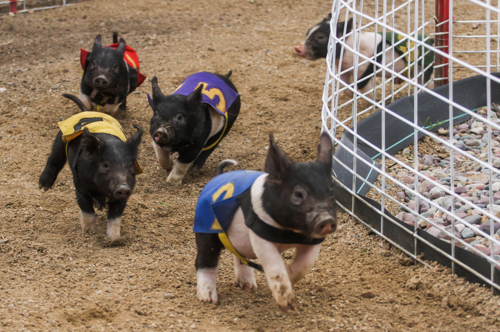

Where pigs fly: Bear Creek Saloon Pig Races in Montana
In Bearcreek, Montana, the Bear Creek Saloon Pig Races are the pride and joy of the town with fewer than a hundred residents. Starting in the summer and continuing through the fall, pig races take place on Thursdays, Fridays, Saturdays, and Sundays with 12 races on a 15-minute schedule. Each pig is named and sponsored by a local company, and viewers can place their bets on the racers. The winning pig earns half of the $50 race pot, while the other half is allocated to scholarships for high school students in Carbon County.
The aforementioned racers. The pigs are raised locally by a family-run farm. .
Bets are placed inside the restaurant, and the audience can view the races from the balcony overlooking the track. The announcer sits off to the left of the crowd.
The pig wranglers, or "hog reeves," sit off to the side of the track, waiting for the races to begin. They care for the pigs when they aren’t racing and keep them on the course during events.
The pigs are given velcro vests to help differentiate each racer from another. The vests are either color-coded or also have numbers on them.
A piglet cuddles in a pile while waiting for the races to begin. Each pig has its own name, which is often meant to be humorous. Examples include Makin' Bacon, Knuckles, or Nota Hot Dog.
Pig races are bet on by buying a square on a board that has 25 squares. Each square costs $2.00. The total prize for the race is $25.00. The other $25.00 goes to a local scholarship fund.

The pigs run the course for about 15 minutes each race. Food is often waiting for the racers at the finish line as an extra incentive to get through the track quickly.
The races are well-known in the area and have started attracting its fair share of tourists from outside Montana and Wyoming. The events are family-friendly too.
Before the first race begins, pig wranglers train the piglets on the course. Early in the season, the young pigs can become overly excited and accidentally run the wrong way.
The pigs are well cared for, healthy, and happy. The pig races have taken place for over three decades and have grown each year.